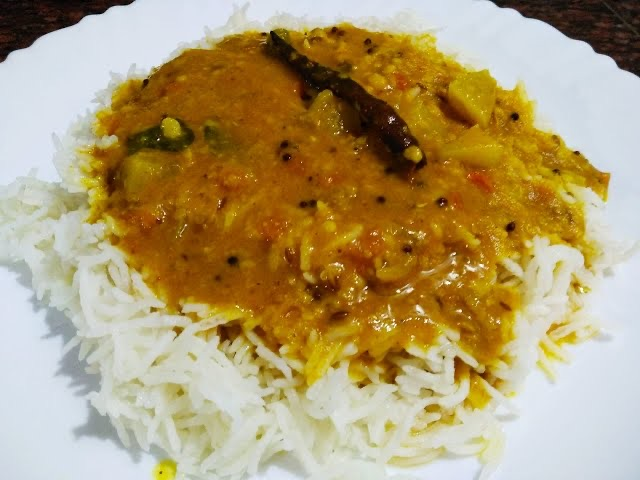

Home
Sambhar Rice

Description
Sambhar rice is also called Sambhar Sadam. There are multiple ways that sambhar can be made and it is prepared differently in different states in India.
Ingredients
- 2 tbsp oil, 1 tbsp ghee
- 1 tsp mustard
- 2 dried red chilli
- few curry leaves, 6 shallots, halves
- 1 potato, chopped, 1 carrot, chopped
- 15 piece drumstick
- 6 beans, chopped
- 1 tomato, chopped
- ½ tsp turmeric, 1 tsp salt, 1 cup tamarind extract, water, as required
Steps
- Firstly, in a large kadai heat 2 tbsp oil, 1 tbsp ghee. splutter 1 tsp mustard, 2 dried red chilli, pinch hing and few curry leaves.
- add 6 shallots and saute for a minute. also add 1 potato, 1 carrot, 15 piece drumstick, 6 beans and 1 tomato.
- further, add ½ tsp turmeric and 1 tsp salt. saute for a minute or until the vegetables turn aromatic
- now add 1½ cup water, cover and boil for 10 minutes or until the vegetables are cooked well.
- add 1 cup tamarind extract and boil for 3 minutes or until the raw flavour of tamarind goes away.
- once everything comes to a boil add in cooked dal.
- mix well and add water as required adjusting the consistency.